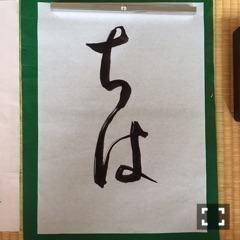
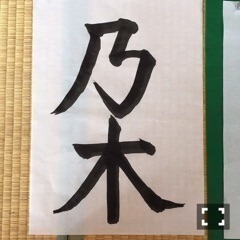

| 2016/08 03 Wed | 斎藤ちはる 久しぶりの書道。(´>∀<｀)ゝ |
ちはるーむへようこそ！
夏休みに入ったのに、
天気が不安定すぎて...
あまり、
夏が来た〜！
って感じがしないのは...
私だけ？？(> <)
夏。。
ある意味。。
いつもの夏と違うんだ。。
-------------------------♡
15thのアンダー曲の
シークレットグラフィティーのMV撮影の時
私は書道をしたんだ！
MV撮影中では
ひたすら樋口樋口樋口と
書いていたんだけど、
撮影後に2枚だけ書いたよ〜♪

「ちは」

「乃木」
高校ぶりに、久しぶりに書道した！
いま思い返すと、
高校生活最後の授業は
書道だったな〜♪
(仕事で早退しちゃったけど...)
やっぱり書道を書くのは
とても好きだし楽しいな〜って感じた！
中々準備や片付けが大変で
時間がある時しか出来ないのがネックだけど
書道を書いている時は
精神統一できるし
自分だけの世界に入り込めるし
集中力を高められる！！
またこれから時間がある時に
書道して書いた作品をブログに載せたいな〜
時間がある時にやってみよう\( ˆoˆ )/
この写真の私、どこか顔が違う...気がする。
何だろう...どこだろう...
-------------------------♡
玲香が、真夏の全国ツアー
最後の神宮3daysしか
出演する事が出来なくなりました(> <)。
玲香〜( ;o; )
寂しいよ〜...( ;o; )
私は玲香が大好きなので
悲しい〜...寂しい〜...会いたい〜...
という、皆さんと同じ気持ちです。
でも玲香の為には良かったのだと思う。
早く治さなきゃ！って意気込んで
無理して、
余計に体調悪くするよりは
これまでゆっくり休めるんだから、と、
ちゃんと自分の体と向き合って
じっくり治していったほうが良いと思うから。
玲香が帰ってきた時に
やっぱりみんなはいいな。
乃木坂はいいな。
って思ってもらえるようになりたい！
待ってるからね、玲香♪
懐かしのチームく。
玲香に会いたいよ〜心配だよ〜
-------------------------♡
♬ ChihaMusic
「All About That Bass」Meghan Trainorさん
この曲の歌詞の意味を知って
可愛い、素敵！と素直に思いました。
MVもとっても可愛くて
何回でも見てられる♡
いつも耳コピで歌ってます。
洋楽、好き。
ちゅ。
人体模型の仮面さん。
おやすみ！
斎藤ちはる